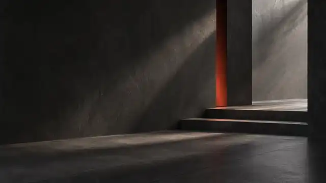

Stone Threshold
A quiet field for a new collection.
آستانهٔ سنگی
فضایی آرام برای معرفی یک مجموعهٔ تازه.

A quiet field for a new collection.
فضایی آرام برای معرفی یک مجموعهٔ تازه.

Editable website hero: select the title or description to edit. The image switches at 600px; text stays outside the artwork. Sample copy, neutral colors and type are proposed. Only #EF4B32 is approved. No logo; not a print master.
Keep the HTML beside both WebP files. Native PNG and six native crops are not hosted by this page.
قالب قابلویرایش سربرگ سایت: برای تغییر عنوان یا توضیح، روی متن بروید. تصویر در عرض ۶۰۰ پیکسل تغییر میکند و متن بیرون از تصویر میماند. متن نمونه، رنگهای خنثی و فونت پیشنهادیاند؛ فقط #EF4B32 تأیید شده است. بدون لوگو؛ نه مستر چاپ.
HTML را کنار هر دو WebP نگه دارید. PNG اصلی و شش برش اصلی در این صفحه میزبانی نشدهاند.